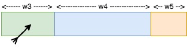

As part of our recent work to support weighted sampling of Spark data frames in sparklyr, we embarked on a journey searching for algorithms that can perform weighted sampling, especially sampling without replacement, in efficient and scalable ways within a distributed cluster-computing framework, such as Apache Spark.
In the interest of brevity, “weighted sampling without replacement” shall be shortened into SWoR for the remainder of this blog post.
In the following sections, we will explain and illustrate what SWoR means probability-wise, briefly outline some alternative solutions we have considered but were not completely satisfied with, and then deep-dive into exponential variates, a simple mathematical construct that made the ideal solution for this problem possible.
If you cannot wait to jump into action, there is also a section in which we showcase example usages of sdf_weighted_sample() in sparklyr. In addition, you can examine the implementation detail of sparklyr::sdf_weighted_sample() in this pull request.
How it all started
Our journey started from a Github issue inquiring about the possibility of supporting the equivalent of dplyr::sample_frac(..., weight = <weight_column>) for Spark data frames in sparklyr. For example,
dplyr::sample_frac(mtcars, 0.25, weight = gear, replace = FALSE)
## mpg cyl disp hp drat wt qsec vs am gear carb
## Merc 280C 17.8 6 167.6 123 3.92 3.440 18.90 1 0 4 4
## Chrysler Imperial 14.7 8 440.0 230 3.23 5.345 17.42 0 0 3 4
## Fiat X1-9 27.3 4 79.0 66 4.08 1.935 18.90 1 1 4 1
## Hornet Sportabout 18.7 8 360.0 175 3.15 3.440 17.02 0 0 3 2
## Valiant 18.1 6 225.0 105 2.76 3.460 20.22 1 0 3 1
## Porsche 914-2 26.0 4 120.3 91 4.43 2.140 16.70 0 1 5 2
## Maserati Bora 15.0 8 301.0 335 3.54 3.570 14.60 0 1 5 8
## Ferrari Dino 19.7 6 145.0 175 3.62 2.770 15.50 0 1 5 6will randomly select one-fourth of all rows from a R data frame named “mtcars” without replacement, using mtcars$gear as weights. We were unable to find any function implementing the weighted versions of dplyr::sample_frac among Spark SQL built-in functions in Spark 3.0 or in earlier versions, which means a future version of sparklyr will need to run its own weighted sampling algorithm to support such use cases.
What exactly is SWoR
The purpose of this section is to mathematically describe the probability distribution generated by SWoR in terms of \(w_1, \dotsc, w_N\), so that readers can clearly see that the exponential-variate based algorithm presented in a subsequent section in fact samples from precisely the same probability distribution. Readers already having a crystal-clear mental picture of what SWoR entails should probably skip most of this section. The key take-away here is given \(N\) rows \(r_1, \dotsc, r_N\) and their weights \(w_1, \dotsc, w_N\) and a desired sample size \(n\), the probability of SWoR selecting \((r_1, \dotsc, r_n)\) is \(\prod\limits_{j = 1}^{n} \left( {w_j} \middle/ {\sum\limits_{k = j}^{N}{w_k}} \right)\).
SWOR is conceptually equivalent to a \(n\)-step process of selecting 1 out of \((n - j + 1)\) remaining rows in the \(j\)-th step for \(j \in \{1, \dotsc, n\}\), with each remaining row’s likelihood of getting selected being linearly proportional to its weight in any of the steps, i.e.,
samples := {}
population := {r[1], ..., r[N]}
for j = 1 to n
select r[x] from population with probability
(w[x] / TotalWeight(population))
samples := samples + {r[x]}
population := population - {r[x]}Notice the outcome of a SWoR process is in fact order-significant, which is why in this post it will always be represented as an ordered tuple of elements.
Intuitively, SWoR is analogous to throwing darts at a bunch of tiles. For example, let’s say the size of our sample space is 5:
Imagine \(r_1, r_2, \dotsc, r_5\) as 5 rectangular tiles laid out contiguously on a wall with widths \(w_1, w_2, \dotsc, w_5\), with \(r_1\) covering \([0, w_1)\), \(r_2\) covering \([w_1, w_1 + w_2)\), …, and \(r_5\) covering \(\left[\sum\limits_{j = 1}^{4} w_j, \sum\limits_{j = 1}^{5} w_j\right)\)
Equate drawing a random sample in each step to throwing a dart uniformly randomly within the interval covered by all tiles that are not hit yet
After a tile is hit, it gets taken out and remaining tiles are re-arranged so that they continue to cover a contiguous interval without overlapping
If our sample size is 3, then we shall ask ourselves what is the probability of the dart hitting \((r_1, r_2, r_3)\) in that order?
In step \(j = 1\), the dart will hit \(r_1\) with probability \(\left. w_1 \middle/ \left(\sum\limits_{k = 1}^{N}w_k\right) \right.\)
 .
.
After deleting \(r_1\) from the sample space after it’s hit, step \(j = 2\) will look like this:
 ,
,
and the probability of the dart hitting \(r_2\) in step 2 is \(\left. w_2 \middle/ \left(\sum\limits_{k = 2}^{N}w_k\right) \right.\) .
Finally, moving on to step \(j = 3\), we have:
 ,
with the probability of the dart hitting \(r_3\) being \(\left. w_3 \middle/ \left(\sum\limits_{k = 3}^{N}w_k\right) \right.\).
So, combining all of the above, the overall probability of selecting \((r_1, r_2, r_3)\) is \(\prod\limits_{j = 1}^{3} \left( {w_j} \middle/ {\sum\limits_{k = j}^{N}{w_k}} \right)\).
Naive approaches for implementing SWoR
This section outlines some possible approaches that were briefly under consideration. Because none of these approaches scales well to a large number of rows or a non-trivial number of partitions in a Spark data frame, we decided to avoid all of them in sparklyr.
A tree-base approach
One possible way to accomplish SWoR is to have a mutable data structure keeping track of the sample space at each step.
Continuing with the dart-throwing analogy from the previous section, let us say initially, none of the tiles has been taken out yet, and a dart has landed at some point \(x \in \left[0, \sum\limits_{k = 1}^{N} w_k\right)\). Which tile did it hit? This can be answered efficiently if we have a binary tree, pictured as the following (or in general, some \(b\)-ary tree for integer \(b \ge 2\))

To find the tile that was hit given the dart’s position \(x\), we simply need to traverse down the tree, going through the box containing \(x\) in each level, incurring a \(O(\log(N))\) cost in time complexity for each sample. To take a tile out of the picture, we update the width of the tile to \(0\) and propagate this change upwards from leaf level to root of the tree, again incurring a \(O(\log(N))\) cost in time complexity, making the overall time complexity of selecting \(n\) samples \(O(n \cdot \log(N))\), which is not so great for large data sets, and also, not parallelizable across multiple partitions of a Spark data frame.
Rejection sampling
Another possible approach is to use rejection sampling. In term of the previously mentioned dart-throwing analogy, that means not removing any tile that is hit, hence avoiding the performance cost of keeping the sample space up-to-date, but then having to re-throw the dart in each of the subsequent rounds until the dart lands on a tile that was not hit previously. This approach, just like the previous one, would not be performant, and would not be parallelizable across multiple partitions of a Spark data frame either.
Exponential variates to the rescue
A solution that has proven to be much better than any of the naive approaches turns out to be a numerical stable variant of the algorithm described in “Weighted Random Sampling” (Efraimidis and Spirakis 2016) by Pavlos S. Efraimidis and Paul G. Spirakis.
A version of this sampling algorithm implemented by sparklyr does the following to sample \(n\) out of \(N\) rows from a Spark data frame \(X\):
- For each row \(r_j \in X\), draw a random number \(u_j\) independently and uniformly randomly from \((0, 1)\) and compute the key of \(r_j\) as \(k_j = \ln(u_j) / w_j\), where \(w_j\) is the weight of \(r_j\). Perform this calulation in parallel across all partitions of \(X\).
- Select \(n\) rows with largest keys and return them as the result. This step is also mostly parallelizable: for each partition of \(X\), one can select up to \(n\) rows having largest keys within that partition as candidates, and after selecting candidates from all partitions in parallel, simply extract the top \(n\) rows among all candidates, and return them as the \(n\) chosen samples.
There are at least 4 reasons why this solution is highly appealing and was chosen to be implemented in sparklyr:
- It is a one-pass algorithm (i.e., only need to iterate through all rows of a data frame exactly once).
- Its computational overhead is quite low (as selecting top \(n\) rows at any stage only requires a bounded priority queue of max size \(n\), which costs \(O(\log(n))\) per update in time complexity).
- More importantly, most of its required computations can be performed in parallel. In fact, the only non-parallelizable step is the very last stage of combining top candidates from all partitions and choosing the top \(n\) rows among those candidates. So, it fits very well into the world of Spark / MapReduce, and has drastically better horizontal scalability compared to the naive approaches.
- Bonus: It is also suitable for weighted reservoir sampling (i.e., can sample \(n\) out of a possibly infinite stream of rows according to their weights such that at any moment the \(n\) samples will be a weighted representation of all rows that have been processed so far).
Why does this algorithm work
As an interesting aside, some readers have probably seen this technique presented in a slightly different form under another name. It is in fact equivalent to a generalized version of the Gumbel-max trick which is commonly referred to as the Gumbel-top-k trick. Readers familiar with properties of the Gumbel distribution will no doubt have an easy time convincing themselves the algorithm above works as expected.
In this section, we will also present a proof of correctness for this algorithm based on elementary properties of probability density function (shortened as PDF from now on), cumulative distribution function (shortened as CDF from now on), and basic calculus.
First of all, to make sense of all the \(\ln(u_j) / w_j\) calculations in this algorithm, one has to understand inverse transform sampling. For each \(j \in \{1, \dotsc, N\}\), consider the probability distribution defined on \((-\infty, 0)\) with CDF \(F_j(x) = e^{w_j \cdot x}\). In order to pluck out a value \(y\) from this distribution, we first sample a value \(u_j\) uniformly randomly out of \((0, 1)\) that determines the percentile of \(y\) (i.e., how our \(y\) value ranks relative to all possible \(y\) values, a.k.a, the “overall population”, from this distribution), and then apply \(F_j^{-1}\) to \(u_j\) to find \(y\), so, \(y = F_j^{-1}(u_j) = \ln(u_j) / w_j\).
Secondly, after defining all the required CDF functions \(F_j(x) = e^{w_j \cdot x}\) for \(j \in \{1, \dotsc, N\}\), we can also easily derive their corresponding PDF functions \(f_j\): \[f_j(x) = \frac{d F_j(x)}{dx} = w_j e^{w_j \cdot x}\].
Finally, with a clear understanding of the family of probability distributions involved, one can prove the probability of this algorithm selecting a given sequence of rows \((r_1, \dotsc, r_n)\) is equal to \(\prod\limits_{j = 1}^{n} \left( {w_j} \middle/ {\sum\limits_{k = j}^{N}{w_k}} \right)\), identical to the probability previously mentioned in the “What exactly is SWoR” section, which implies the possible outcomes of this algorithm will follow exactly the same probability distribution as that of a \(n\)-step SWoR.
In order to not deprive our dear readers the pleasure of completing this proof by themselves, we have decided to not inline the rest of the proof (which boils down to a calculus exercise) within this blog post, but it is available in this file.
Weighted sampling with replacement
While all previous sections focused entirely on weighted sampling without replacement, this section will briefly discuss how the exponential-variate approach can also benefit the weighted-sampling-with-replacement use case (which will be shortened as SWR from now on).
Although SWR with sample size \(n\) can be carried out by \(n\) independent processes each selecting \(1\) sample, parallelizing a SWR workload across all partitions of a Spark data frame (let’s call it \(X\)) will still be more performant if the number of partitions is much larger than \(n\) and more than \(n\) executors are available in a Spark cluster.
An initial solution we had in mind was to run SWR with sample size \(n\) in parallel on each partition of \(X\), and then re-sample the results based on relative total weights of each partition. Despite sounding deceptively simple when summarized in words, implementing such a solution in practice would be a moderately complicated task. First, one has to apply the alias method or similar in order to perform weighted sampling efficiently on each partition of \(X\), and on top of that, implementing the re-sampling logic across all partitions correctly and verifying the correctness of such procedure will also require considerable effort.
In comparison, with the help of exponential variates, a SWR carried out as \(n\) independent SWoR processes each selecting \(1\) sample is much simpler to implement, while still being comparable to our initial solution in terms of efficiency and scalability. An example implementation of it (which takes fewer than 60 lines of Scala) is presented in samplingutils.scala.
Visualization
How do we know sparklyr::sdf_weighted_sample() is working as expected? While the rigorous answer to this question is presented in full in the testing section, we thought it would also be useful to first show some histograms that will help readers visualize what that test plan is. Therefore in this section, we will do the following:
- Run
dplyr::slice_sample()multiple times on a small sample space, with each run using a different PRNG seed (sample size will be reduced to \(2\) here so that there will fewer than 100 possible outcomes and visualization will be easier) - Do the same for
sdf_weighted_sample() - Use histograms to visualize the distribution of sampling outcomes
Throughout this section, we will sample \(2\) elements out of \(\{0, \dotsc, 7\}\) without replacement according to some weights, so, the first step is to set up the following in R:
library(sparklyr)
sc <- spark_connect(master = "local")
# `octs` will be our sample space
octs <- data.frame(
x = seq(0, 7),
weight = c(1, 4, 2, 8, 5, 7, 1, 4)
)
# `octs_sdf` will be our sample space copied into a Spark data frame
octs_sdf <- copy_to(sc, octs)
sample_size <- 2In order to tally up and visualize the sampling outcomes efficiently, we shall map each possible outcome to an octal number (e.g., (6, 7) gets mapped to \(6 \cdot 8^0 + 7 \cdot 8^1\)) using a helper function to_oct in R:
to_oct <- function(sample) sum(8 ^ seq(0, sample_sz - 1) * sample$x)We also need to tally up sampling outcomes from dplyr::slice_sample() and sparklyr::sdf_weighted_sample() in 2 separate arrays:
max_possible_outcome <- to_oct(list(x = seq(8 - sample_sz, 7)))
sdf_weighted_sample_outcomes <- rep(0, max_possible_outcome)
dplyr_slice_sample_outcomes <- rep(0, max_possible_outcome)Finally, we can run both dplyr::slice_sample() and sparklyr::sdf_weighted_sample() for arbitrary number of iterations and compare tallied outcomes from both:
num_sampling_iters <- 1000 # actually we will vary this value from 500 to 5000
for (x in seq(num_sampling_iters)) {
sample1 <- octs_sdf %>%
sdf_weighted_sample(
k = sample_size, weight_col = "weight", replacement = FALSE, seed = seed
) %>%
collect() %>%
to_oct()
sdf_weighted_sample_outcomes[[sample1]] <-
sdf_weighted_sample_outcomes[[sample1]] + 1
seed <- x * 97
set.seed(seed) # set random seed for dplyr::sample_slice()
sample2 <- octs %>%
dplyr::slice_sample(
n = sample_size, weight_by = weight, replace = FALSE
) %>%
to_oct()
dplyr_slice_sample_outcomes[[sample2]] <-
dplyr_slice_sample_outcomes[[sample2]] + 1
}After all the hard work above, we can now enjoy plotting the sampling outcomes from dplyr::slice_sample() and those from sparklyr::sdf_weighted_sample() after 500, 1000, and 5000 iterations and observe how the distributions of both start converging after a large number of iterations.
Sampling outcomes after 500, 1000, and 5000 iterations, shown in 3 histograms:
 (you will most probably need to view it in a separate tab to see everything clearly)
(you will most probably need to view it in a separate tab to see everything clearly)
Testing
While parallelized sampling based on exponential variates looks fantastic on paper, there are still plenty of potential pitfalls when it comes to translating such idea into code, and as usual, a good testing plan is necessary to ensure implementation correctness.
For instance, numerical instability issues from floating point numbers arise if \(\ln(u_j) / w_j\) were replaced by \(u_j ^ {1 / w_j}\) in the aforementioned computations.
Another more subtle source of error is the usage of PRNG seeds. For example, consider the following:
def sampleWithoutReplacement(
rdd: RDD[Row],
weightColumn: String,
sampleSize: Int,
seed: Long
): RDD[Row] = {
val sc = rdd.context
if (0 == sampleSize) {
sc.emptyRDD
} else {
val random = new Random(seed)
val mapRDDs = rdd.mapPartitions { iter =>
for (row <- iter) {
val weight = row.getAs[Double](weightColumn)
val key = scala.math.log(random.nextDouble) / weight
<and then make sampling decision for `row` based on its `key`,
as described in the previous section>
}
...
}
...
}
}Even though it might look OK upon first glance, rdd.mapPartitions(...) from the above will cause the same sequence of pseudorandom numbers to be applied to multiple partitions of the input Spark data frame, which will cause undesired bias (i.e., sampling outcomes from one partition will have non-trivial correlation with those from another partition when such correlation should be negligible in a correct implementation).
The code snippet below is an example implementation in which each partition of the input Spark data frame is sampled using a different sequence of pseudorandom numbers:
def sampleWithoutReplacement(
rdd: RDD[Row],
weightColumn: String,
sampleSize: Int,
seed: Long
): RDD[Row] = {
val sc = rdd.context
if (0 == sampleSize) {
sc.emptyRDD
} else {
val mapRDDs = rdd.mapPartitionsWithIndex { (index, iter) =>
val random = new Random(seed + index)
for (row <- iter) {
val weight = row.getAs[Double](weightColumn)
val key = scala.math.log(random.nextDouble) / weight
<and then make sampling decision for `row` based on its `key`,
as described in the previous section>
}
...
}
...
}
}An example test case in which a two-sided Kolmogorov-Smirnov test is used to compare distribution of sampling outcomes from dplyr::slice_sample() with that from sparklyr::sdf_weighted_sample() is shown in this file. Such tests have proven to be effective in surfacing non-obvious implementation errors such as the ones mentioned above.
Example Usages
Please note the sparklyr::sdf_weighted_sample() functionality is not included in any official release of sparklyr yet. We are aiming to ship it as part of sparklyr 1.4 in about 2 to 3 months from now.
In the meanwhile, you can try it out with the following steps:
First, make sure remotes is installed, and then run
remotes::install_github("sparklyr/sparklyr", ref = "master")to install sparklyr from source.
Next, create a test data frame with numeric weight column consisting of non-negative weight for each row, and then copy it to Spark (see code snippet below as an example):
library(sparklyr)
sc <- spark_connect(master = "local")
example_df <- data.frame(
x = seq(100),
weight = c(
rep(1, 50),
rep(2, 25),
rep(4, 10),
rep(8, 10),
rep(16, 5)
)
)
example_sdf <- copy_to(sc, example_df, repartition = 5, overwrite = TRUE)Finally, run sparklyr::sdf_weighted_sample() on example_sdf:
sample_size <- 5
samples_without_replacement <- example_sdf %>%
sdf_weighted_sample(
weight_col = "weight",
k = sample_size,
replacement = FALSE
)
samples_without_replacement %>% print(n = sample_size)
## # Source: spark<?> [?? x 2]
## x weight
## <int> <dbl>
## 1 48 1
## 2 22 1
## 3 78 4
## 4 56 2
## 5 100 16
samples_with_replacement <- example_sdf %>%
sdf_weighted_sample(
weight_col = "weight",
k = sample_size,
replacement = TRUE
)
samples_with_replacement %>% print(n = sample_size)
## # Source: spark<?> [?? x 2]
## x weight
## <int> <dbl>
## 1 86 8
## 2 97 16
## 3 91 8
## 4 100 16
## 5 65 2Acknowledgement
First and foremost, the author wishes to thank @ajing for reporting the weighted sampling use cases were not properly supported yet in sparklyr 1.3 and suggesting it should be part of some future version of sparklyr in this Github issue.
Special thanks also goes to Javier (@javierluraschi) for reviewing the implementation of all exponential-variate based sampling algorithms in sparklyr, and to Mara (@batpigandme), Sigrid (@Sigrid), and Javier (@javierluraschi) for their valuable editorial suggestions.
We hope you have enjoyed reading this blog post! If you wish to learn more about sparklyr, we recommend visiting sparklyr.ai, spark.rstudio.com, and some of the previous release posts such as sparklyr 1.3 and sparklyr 1.2. Also, your contributions to sparklyr are more than welcome. Please send your pull requests through here and file any bug report or feature request in here.
Thanks for reading!
Efraimidis, Pavlos, and Paul (Pavlos) Spirakis. 2016. “Weighted Random Sampling.” In Encyclopedia of Algorithms, edited by Ming-Yang Kao, 2365–7. New York, NY: Springer New York. https://doi.org/10.1007/978-1-4939-2864-4_478.